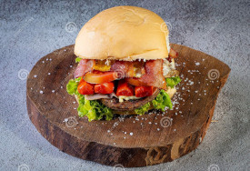
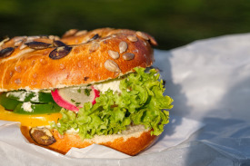
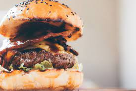
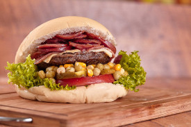
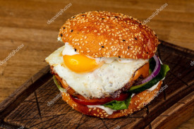
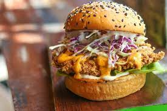
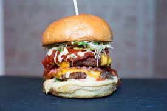

X-Tudo -- R$ 20,00
X-Salada -- R$ 12,00
X-Burguer -- R$ 10,00
X-Calabresa -- R$ 14,00
X-Egg -- R$ 13,00
X-Frango -- R$ 15,00
X-Bacon -- R$ 15,00
X-Tudo: Pão, hambúrguer, calabresa, bacon, frango, vina, ovo, tomate, milho, picles, alface, presunto e queijo
X-Salada: Pão, hambúrguer, queijo, presunto, alface, tomate e milho
X-Burguer: Pão, maionese, hambúrguer, presunto e queijo
X-Calabresa: Pão, hambúrguer, calabresa, tomate, milho, picles, alface, presunto e queijo
X-Egg: Pão, hambúrguer, ovo, milho, tomate, alface, presunto e queijo
X-Frango: Pão, hambúrguer, frango, tomate, milho, picles, alface, presunto e queijo
X-Bacon: Pão, hambúrguer, bacon, tomate, milho, picles, alface, presunto e queijo
voltar avançar